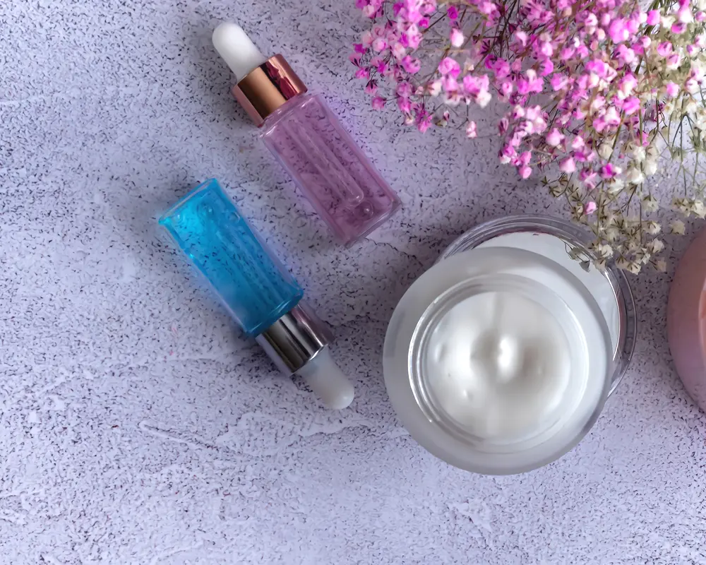

Do Med Spa Results Last? A Realistic Look at Longevity
Before you spend money on any treatment, this is the question worth asking. Not just does it work, but how long does it work for. The honest answer is that it depends on the treatment, and knowing which is which changes how you budget.

People walk into a consultation hoping to hear the word permanent. It rarely applies. Most med spa treatments are maintenance, not one-and-done fixes, and that is not a flaw. It is just how the biology works. Your skin keeps aging, your muscles keep moving, and your body keeps metabolizing whatever was added. Understanding the rough lifespan of each treatment helps you plan instead of feeling surprised when the effect fades.
The short-lived group
Some treatments are wonderful precisely because they wear off. Botox and similar wrinkle relaxers are the obvious example. They soften expression lines by quieting the muscle, and the effect typically lasts a few months before the muscle wakes back up. That is why people schedule it a few times a year rather than once.
Fillers sit in a similar bucket but hold on longer, often for several months to a year or more depending on the product and the area. Your body slowly breaks them down over time. Neither of these is a scam for fading. That is simply how they are designed to work, and the temporary nature is part of why they feel low-risk to try.
The build-and-maintain group
Then there are treatments that improve your own skin gradually and hold their gains longer, as long as you keep up some upkeep. Microneedling and many resurfacing treatments fall here. They nudge your skin to produce more collagen, and that new collagen is genuinely yours. But you keep aging, so the smart approach is a series up front followed by occasional maintenance sessions to stay ahead of the clock.
Laser hair removal is the closest thing to lasting on this list. It reduces hair long-term, though most people still need the odd touch-up as stray follicles wake up over the years. Even here, permanent reduction is the honest phrase, not permanent removal.
What makes results fade faster
Two people can get the same treatment and see it last very different amounts of time. A lot of that comes down to habits after the appointment. The biggest culprit is sun exposure. Nothing undoes skin treatments faster than skipping sunscreen, because sun damage attacks the exact things you just paid to improve.
Other factors include your age, your skin type, how deep the treatment went, and whether you followed the aftercare. Smoking and poor sleep do not help either. None of this is about willpower or blame. It is just useful to know that the result is a partnership between the provider and how you treat your skin afterward.
How to make it last
A few simple things stretch your results and your money:
- Wear sunscreen every single day, not just on beach days. This is the single highest-return habit for keeping any skin result alive.
- Follow the maintenance schedule your provider suggests instead of waiting until everything fully fades and starting over.
- Keep a simple, consistent home routine so your skin stays in good shape between visits.
- Ask at the consultation how long this specific treatment tends to last for someone like you, and factor the upkeep into your budget from day one.
What to expect over a year
Almost nothing at a med spa is truly forever, and that is fine once you expect it. The better question is not whether a result is permanent, but whether the upkeep fits your life and your budget. A treatment that lasts a few months and costs a little is not worse than one that lasts a year. It is just a different rhythm. Ask about longevity before you book, plan for the maintenance, and you will never feel blindsided when a result naturally fades. That is the difference between a happy regular and someone who feels like they wasted their money.